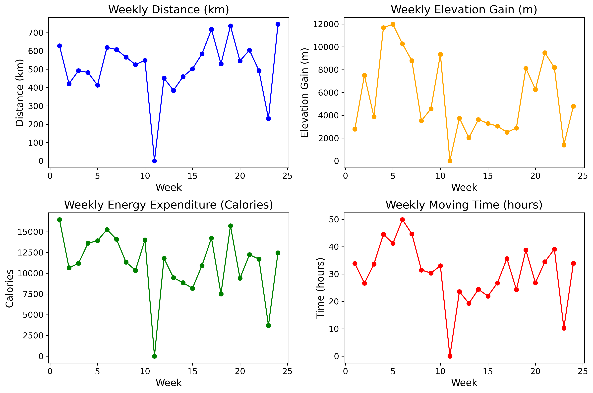

My South American Epic - Route Overview#
Here’s the plan. Here’s what we signed up for, to ride our bikes from Cartagena, Colombia on the Caribbean coast to the southernmost tip of South America. As envisioned by TDA Global Cycling (fantastic company with tours all over the world)South American Epic (a fabulous group) total was to be 13,785 km mostly within a few hundred km of the pacific ocean, on the dry side of the continent. There were about 30 of us to begin in Cartagena.
{kind=link}
Fig. 1 All smiles in Cartagena before we begin#
But that’s also the bumpy side, back and forth across and through the Andes. The schedule was fixed, we ride 5 or 6 days a week, for 5 or 6 hrs a day (if all goes well) for 24 weeks. Broken down by ride that’s a bit over 100km / riding day with a bit over 1200m of climbing.
Figure 1. On the left, the orange line is a sketch of the route as planned. On the right each of my rides (some were shortened, some were skipped) are depicted with a different color for each day of riding.
As planned |
As Ridden |
Of course not everything went to plan. I didn’t do every ride from start to finish. We all missed a few days of riding in Bolivia due to protests, and in Patagonia due to logistical issues. Still it was a big trip.
Some numbers for my expedition, it was a lot
Total |
Per Week |
Per Ride (118) |
|
|---|---|---|---|
Distance (km) |
12,285 |
512 |
104 |
Elevation Gain (m) |
133,651 |
5,569 |
1,132 |
Energy Expended (kcal) |
267,015 |
11,126 |
2,263 |
Moving Time (hrs) |
728 |
30.3 |
6.2 |
Lots of climbing in the first few weeks in Colombia and Ecuador. Flattish as we rode along the coast of Peru. More climbing back into the Andes, a few days interruption waiting for protests to clear in Bolivia.
{ width=75% }
Myst/Sphinx figure
{kind=link}
Fig. 2 Stats by week.#
I loved this trip. It was often very hard. I really loved the rivers we followed and the work they did in wearing down the mountains so that roads could be built and we could make it from the top to the bottom of South America on our bikes. Links below to each of the countries that we traveled through. 6 countries plus a 7th section for Patagonia (several border crossings over the last few weeks).
The rhythm of the tour was centered around blocks of rides, 2 - 7 days where we would ride every day. Live out of a single duffle. Punctuated by rest days where we could recuperate and the staff could catch their breath. Explore. Do laundry. Repack and get ready to ride again.
Each country is divided into 2-5 riding blocks. Summaries and links to more details below.
Colombia#
We started in Cartagena on the coast on the last day of June, in hot and humid conditions. The first block of riding took us to San Marcos, in the La Mojana wetlands. Rivers were running high, and we needed to charter some boats from local folks to bypass our first unpaved (muddy) road.
5 riding blocks
Cartagena to San Marcos
Early routes feature low-altitude bridges crossing coastal rivers flowing to the Caribbean Sea.
Tropical plains and gentle terrain gradually transition to more humid river valleys.
San Marcos to Medellin
Traveling inland, riders enter the Cauca River Valley, wedged between the Western and Central Cordilleras.
Uphill sections feature steep climbs out of the floodplain, revealing cooler, mist-shrouded highlands.
Medellin to Bogota
The route weaves between tributaries of Colombia’s largest river, the Magdalena, with high passes unveiling coffee plantations and cloud forests.
Frequent descents to bridge crossings underscore the interplay of canyons and ridges.
Bogotá to the Tatacoa Desert
A descent from the Eastern Cordillera leads into the warm, sprawling Magdalena Valley, passing through drier zones like the Tatacoa Desert, shaped by centuries of erosion.
Colombian Massif & the Magdalena’s Headwaters
Near San Agustín, the Magdalena River is born. Rides see frequent transitions from river gorges to páramo passes within the Puracé and Colombian Massif regions.
Southern Andes & the Border
Final Colombian stretches around Pasto and Ipiales climb to nearly 3,000m before crossing into Ecuador at the Rumichaca Bridge—another symbolic low point bridging two countries.
Ecuador#
The Andean spine continues south along the famed Avenue of the Volcanoes.
Bridges over highland rivers like the Guayllabamba or Chambo mark daily minima.
Numerous passes above 3,000–4,000m separate distinct drainage basins, each flowing west to the Pacific or east toward the Amazon.
Peru#
Northern Peru begins with Andean foothills and sees crossing of rivers that eventually merge into the Marañón, a principal tributary of the Amazon.
Deeper into the highlands, the route intersects the Apurímac and Urubamba watersheds, known for steep canyon descents and big climbs.
Passes above 4,000m open onto altiplano expanses, with sweeping views of mountain ridges eroded by countless millennia of water flow.
{kind=link}
Fig. 3 Meeting with local cyclists on the Plaza Major in Cusco#
Bolivia#
Entering Bolivia often involves a descent to Lake Titicaca or surrounding valleys, then re-ascending onto the Altiplano.
While fewer large rivers cut the high plateau, notable valley systems like the Río Desaguadero occasionally punctuate the broad plains.
The route navigates remote stretches with stark, open vistas, minimal vegetation, and wide salt flats like the Salar de Uyuni.
Argentina#
The journey southward can begin near the Andean side of Northwest Argentina, crossing wide valleys (e.g., the Calchaquí Valleys) with cacti-dotted slopes.
Rivers here are often seasonal torrents, carving dramatic canyons.
Approaching the central regions may involve bridging the Río Dulce, Río Salado, or feeders into the Pampas basins.
Chile (Northern & Central)#
The first stretch in Chile typically includes Atacama Desert regions, where rivers are scarce but dramatic oases (like the Río Loa watershed) highlight precious water sources.
Farther south, crossing the Central Valley region involves bridging rivers like the Río Aconcagua, which are lifelines for Chile’s fertile agricultural zones.
The Andean passes to Argentina (and back) can exceed 3,000–4,000m, with precipitous descents following the major Andean drainage corridors.
Patagonia (El Chaltén to Ushuaia)#
After central Chile and/or crossing the Andes into El Chaltén (Argentina), the route enters Patagonia: a land of rugged peaks, glaciers, and windswept steppes.
Iconic rivers like the Río Santa Cruz, Río Gallegos, and countless meltwater streams from the Southern Patagonian Ice Field shape this wild region.
The ride alternates between near-sea-level crossings and passes battered by cold, gusty winds.
Reaching Ushuaia often involves one final set of climbs across the Fuegian Andes, culminating in a last descent into the world’s southernmost city.
{kind=link}
Fig. 4 Ready to start the last ride from Lago Fagnano, Argentina#
Closing Thoughts#
From Colombia’s Caribbean plains to the windswept fjords of Patagonia, rivers and their valleys form the arteries and lifelines of the continent. The consistent pattern of bridges at daily minima and passes between watersheds at daily maxima conveys a deep respect for how water and time have sculpted South America’s diverse landscapes.